Accreditamento Terminalista
Il portale delle Smart Guide è uno spazio digitale che raccoglie risorse pratiche e aggiornate in un unico ambiente intuitivo. Strumenti chiari e organizzati per organizzarti e trovare subito ciò che ti serve.
01.
Accreditamento Terminalista
Una panoramica sul flusso di accreditamento per l'utente "Terminalista".
Accreditamento Terminalista
Passaggi per accreditarsi a sistema
Per accreditarsi a sistema, il Terminalista dovrà procedere seguendo i passaggi sottostanti.
I tuoi dati
Consente di inserire i dati: anagrafici, di residenza e di contatto.
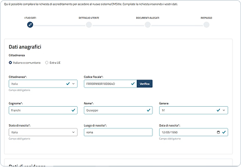
Dettaglio utente
Consente di aggiungere un nuovo profilo, indicando la tipologia: di account, utente e profilo.
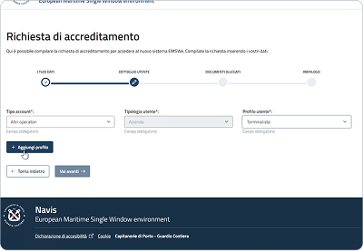
Documenti allegati (opzionale)
Consente di allegare varie tipologie di documenti.
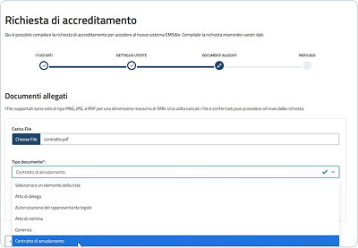
Riepilogo
Consente di visualizzare il riepilogo delle informazioni inserite negli step precedenti e procedere con la sottomissione dell'accreditamento.
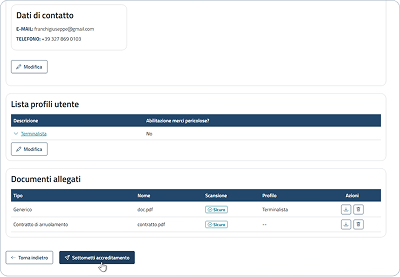
I TUOI DATI
- I tuoi dati
- Dettaglio utente
- Documenti allegati
- Riepilogo
Dati anagrafici "Extra UE"
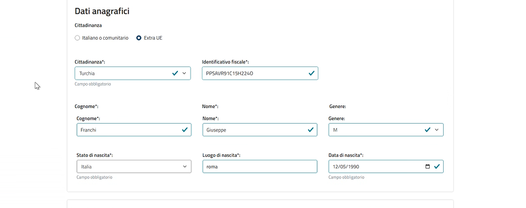
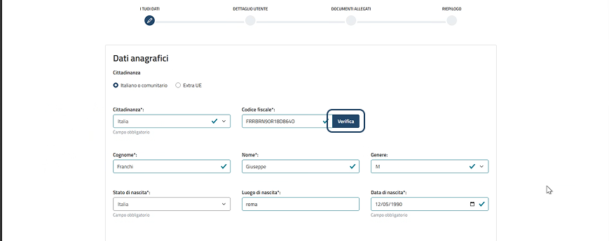
Dati anagrafici "Italiano o comunitario"
Inserimento dati di residenza e di contatto
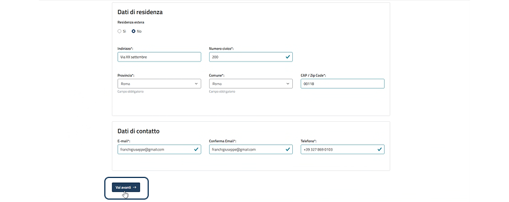
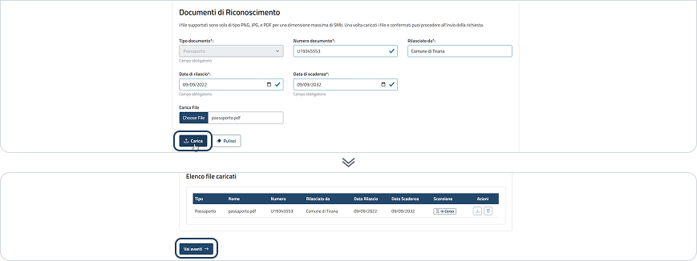
Documento di riconoscimento per utente Extra UE
Effettuando l'accesso tramite SPID, CIE, CNS ed eIDAS, i dati anagrafici vengono recuperati automaticamente in relazione alle impostazioni dei protocolli di identità digitale. In caso contrario l'utente deve inserire i dati manualmente.
DETTAGLIO UTENTE
- I tuoi dati
- Dettaglio utente
- Documenti allegati
- Riepilogo
Selezione tipologia account, utente e profilo
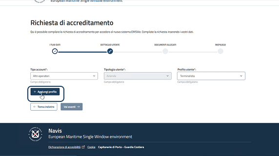
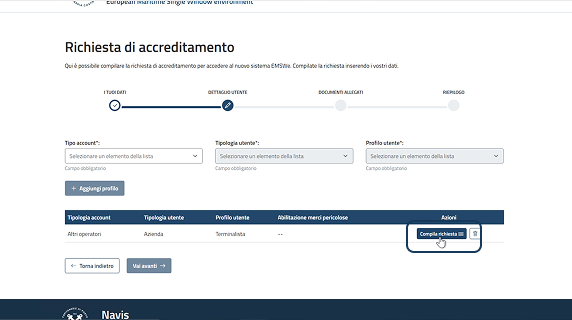
Compila richiesta
Aggiunta informazioni profilo selezionato
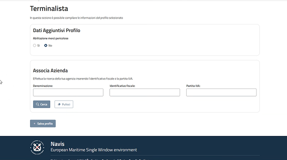
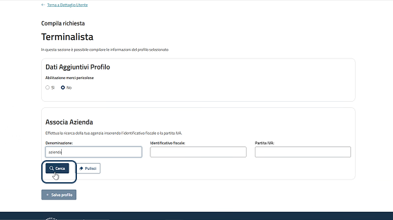
Ricerca azienda
Selezione e associazione azienda
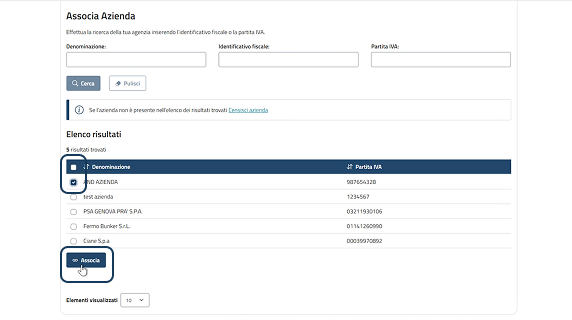
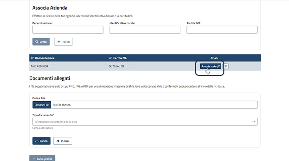
Associazione porto
Selezione e aggiunta porto
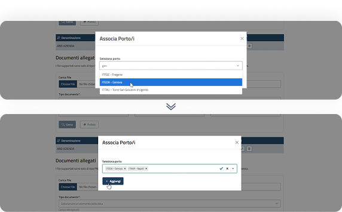
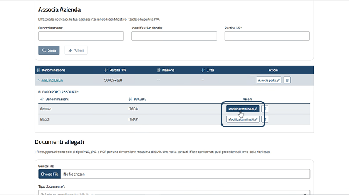
Associazione terminal
Selezione e associazione terminal
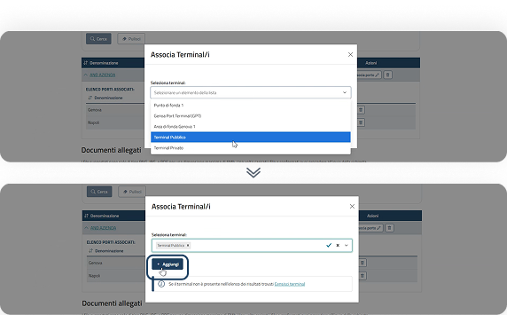
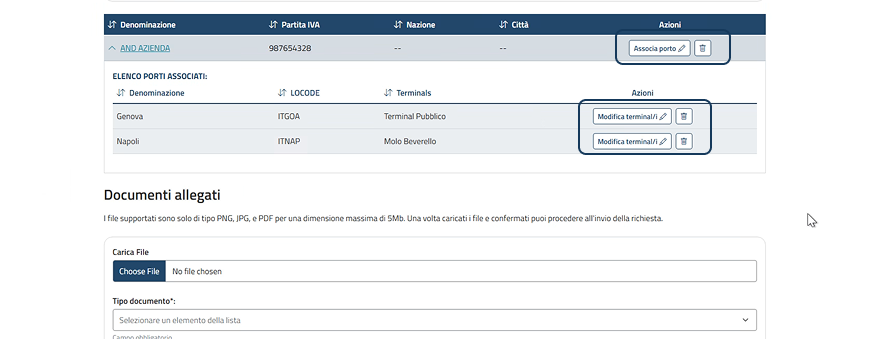
Terminal associati e azioni disponibili
Caricamento documento (opzionale)
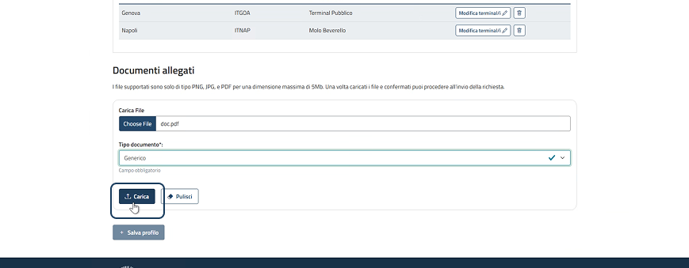
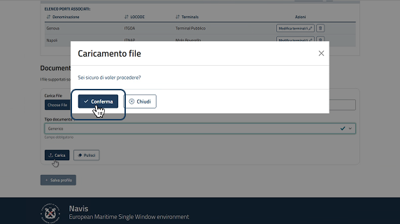
Finestra di conferma caricamento documento
Azioni disponibili su file caricati e salvataggio profilo
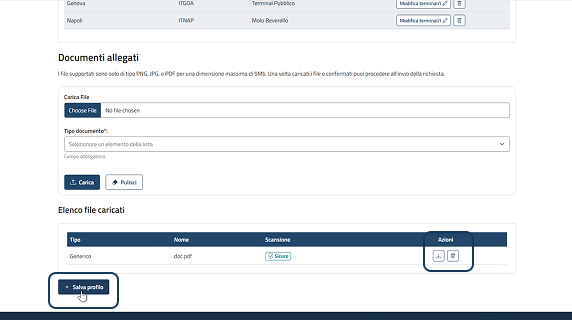
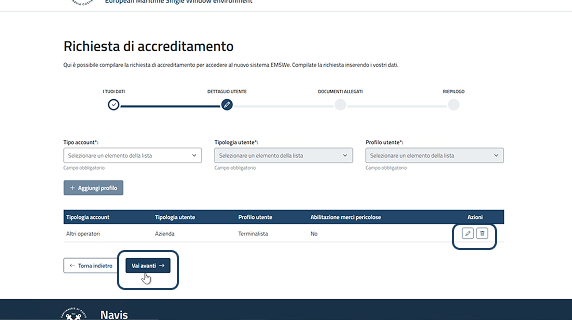
Richiesta compilata e step successivo
Se l'azienda non è presente nell'elenco dei risultati trovati, cliccare "Censisci azienda" all'interno della sezione di associazione.
Se il terminal non è presente nell'elenco dei risultati trovati, cliccare "Censisci terminal" all'interno della finestra di associazione.
È possibile aggiungere ulteriori profili replicando le operazioni sopra descritte.
DOCUMENTI ALLEGATI (OPZIONALE)
- I tuoi dati
- Dettaglio utente
- Documenti allegati
- Riepilogo
Allegare documenti successivamente

RIEPILOGO
- I tuoi dati
- Dettaglio utente
- Documenti allegati
- Riepilogo
Informazioni e possibili azioni
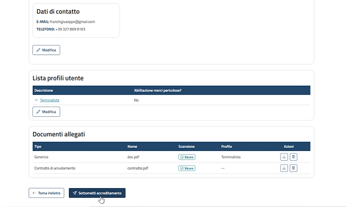

Finestra di conferma (Italiano/Comunitario e Extra UE)
Richiesta inoltrata
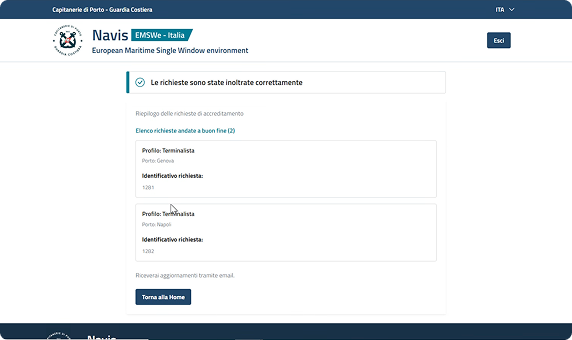
CENSIMENTO NUOVA AZIENDA — AZIENDA NON PRESENTE IN ELENCO
- I tuoi dati
- Dettaglio utente
- Documenti allegati
- Riepilogo
Censimento azienda non presente
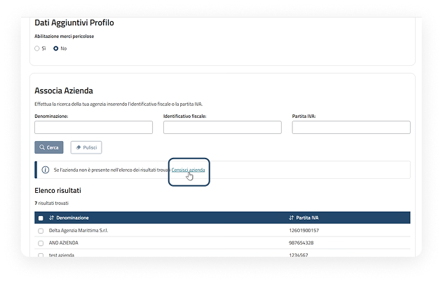
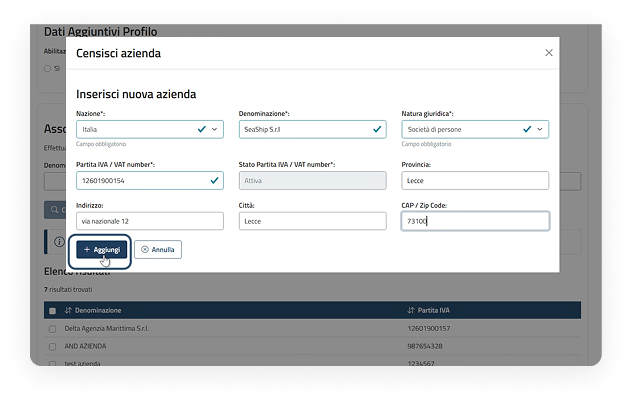
Inserimento informazioni azienda
Associazione azienda e azioni disponibili
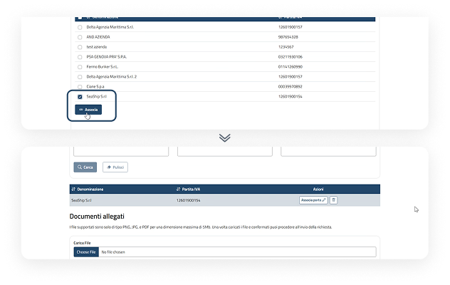
CENSIMENTO NUOVO TERMINAL — TERMINAL NON PRESENTE IN ELENCO
- I tuoi dati
- Dettaglio utente
- Documenti allegati
- Riepilogo
Censimento terminal non presente
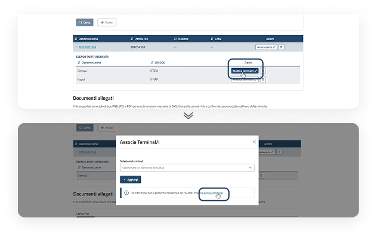
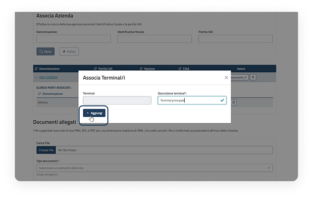
Selezione e associazione
Terminal associato e azioni disponibili
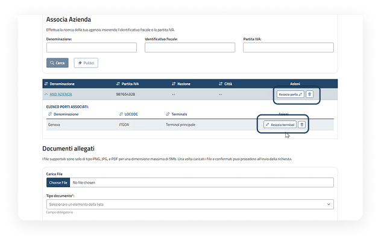